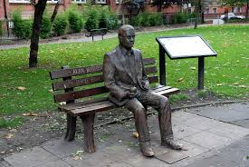
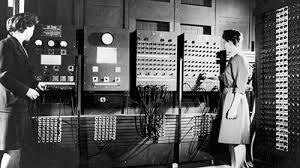
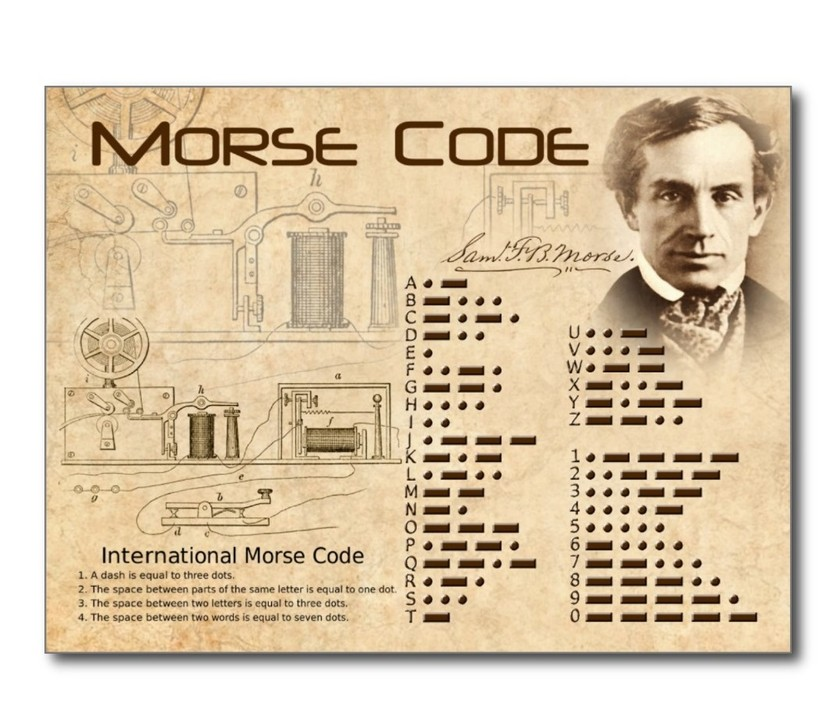
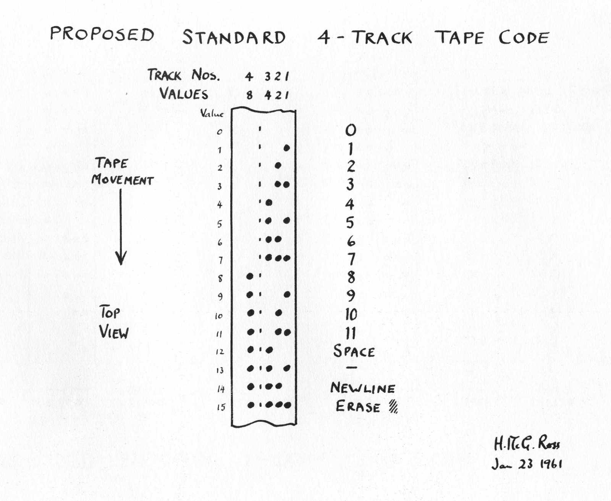
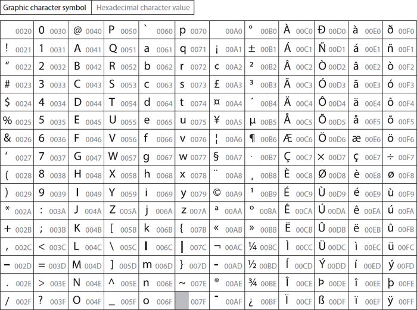

Text Was a Problem Long Before AI
The overlooked history that explains why tokenisation exists at all.
I watched The Imitation Game a while back. It was good. Brilliant people under impossible pressure, machines doing clever things. You come away feeling inspired. But I realised something afterwards: at no point did the film feel like a story about text. And text is what I actually spend most of my computing life doing. Typing, reading, searching, asking questions in words and getting answers back in words.
Later, I visited the Alan Turing memorial in Manchester and ended up standing there longer than I meant to. I wasn't thinking about intelligence or computation. I was thinking about something much more basic. I use text with machines every single day. Terminals, documents, chat windows. It feels completely natural, like it was always this way. But standing there, one question kept nagging at me: why did I ever assume text belonged inside a machine?

Alan Turing memorial, ManchesterFrom the internet. I later realised I'm terrible at taking photos.
Today we talk about language models reasoning, understanding, generating text. Underneath all of that sits a much stranger assumption: that text can enter a machine in the first place. We never question it because text editors, browsers, chat windows and terminals are everywhere. It feels fundamental, like it was always there.
It wasn't. And understanding why it wasn't is the key to understanding why tokenisation exists.
What "computer" actually meant
Before machines, a computer was a person. Literally a job title. They sat at desks with tables, slide rules and formulas, grinding through calculations by hand. The output was always numbers. When machines eventually showed up, they were built to replace exactly that: the repetitive number crunching. Take the human error and fatigue out of arithmetic. That was the entire ambition. Nobody was thinking about words or language. It wasn't on the radar.
Numbers in, numbers out
The first electronic computers were built for ballistics, trajectories, weather forecasting. Problems that already lived inside mathematics. Numbers went in, numbers came out. The machine's job was to do it faster and without mistakes. No documents to process, no questions to answer, no text to deal with. Language wasn't missing from these machines because they were bad at it. Language was irrelevant. It simply wasn't part of the job description.

Early electronic computersLook at photos of these machines. Rooms full of cables, vacuum tubes and switches. They weren't built as thinking machines. They were engines for doing maths really fast. Asking one to handle a sentence of English would be like asking a calculator to appreciate a poem. Not because the calculator is bad at poetry. Because poetry doesn't exist in its universe. The machine only knows exact states and exact operations. Ambiguity isn't just hard for it. Ambiguity is meaningless.
What the inside of a machine actually looked like
No letters in there. No words. Just voltages moving through circuits, switches flipping, counters ticking. The machine's entire world was: add, subtract, multiply, compare, branch, look up a value from a table. That was everything. If something couldn't be expressed in that form, it didn't exist as far as the machine was concerned.
If you had handed one of these machines a paragraph of English, it wouldn't have misunderstood it. It wouldn't have rejected it either. It would have had no way to even recognise that you'd given it anything at all. Language didn't fail inside early computers. Language never got through the door.
The important bit is easy to miss from where we stand today. These machines didn't start out bad at language and slowly get better. They started in a world where language didn't exist. There was no text to be bad at. For text to get inside a machine, it had to be completely transformed first, squeezed and compressed into pure numbers. And that transformation didn't begin with anything fancy like learning or intelligence. It began with a much more basic question: how do you shove language through a system that has no concept of it?
Humans had already solved this once before
With wires. Long before computers.
The telegraph forced the issue. A wire doesn't know what a letter is. It doesn't know what a word is. All it can do is carry electrical pulses. On, off, long, short, silence. So if you wanted to send language through a wire, you had to change the language first.
Morse code was the answer. And it's worth understanding what Morse code actually was, because it set the pattern for everything that came after. It wasn't an attempt to teach the wire what language means. It was the opposite: an acceptance that the wire would never understand anything. Letters got stripped down to patterns of short and long signals. Dots and dashes. These were chosen not because they represented letters well, but because they survived noise and could be reliably detected at the other end. The meaning got removed at the sending end, the bare structure went through the wire, and a human at the other end reconstructed the meaning.

Morse codeLanguage reduced to pulses. Meaning removed, structure preserved, human reassembles.
This is the template. Meaning doesn't travel. Structure does. A human encodes at one end, the system carries the signal, a human decodes at the other end. The system in between is completely ignorant. Every encoding system that came after Morse follows this same basic pattern, even if the details change.
Then every machine invented its own language
By the time electronic computers arrived, we'd already accepted the deal: language doesn't enter machines as language. It enters as numbers. That lesson came from telegraph wires. Fine. Symbols become numbers, numbers are what machines handle, should be straightforward from here.
It wasn't. Because nobody agreed on which numbers. Every machine had its own ideas. How many bits per character. Which bit patterns mapped to which letters. What counted as valid input. These decisions were made locally, based on hardware constraints and engineering convenience. There was no shared standard. The result was that the same bits could mean completely different characters on different machines. A document that worked perfectly on one system could turn into gibberish the moment it moved to another.

Early encodingsText that couldn't survive being moved.
What made this unsettling was that nothing was technically broken. Every machine was doing exactly what it was supposed to do. The data was intact. The failure happened in the gap between systems, where one machine's assumptions didn't match another's. A document could physically cross a room and lose its meaning. Text in machines wasn't just a technical problem. It was a coordination problem.
ASCII, and then Unicode
ASCII was the first serious attempt at getting everyone to agree. Seven bits, one table, a small set of characters. It wasn't rich. It wasn't expressive. But if one machine said A, another machine would hear A. Agreement. That was the point. And it was enough to make computing practical at scale.
As computing spread beyond its original English-speaking world, ASCII's limitations became obvious. Different regions adopted different encodings for their scripts. The same stream of bytes could be interpreted differently depending on which encoding the receiving system assumed. Once interpretation diverged, the text collapsed into noise.

UnicodeUnicode was the attempt to fix this permanently. The idea: give every character used by every human language a unique number that means the same thing everywhere. One table for the entire planet. And it largely worked. Text could finally be stored and transmitted globally without breaking.
But people misunderstand what Unicode actually solved. It solved representation: making sure symbols have consistent numerical identities everywhere. It did not solve structure. Two Unicode characters might form a word together. They might carry a grammatical relationship. They might be semantically related. Unicode knows nothing about any of that. To the machine they're just integers sitting next to each other in memory. They don't know they're neighbours. They don't know they're part of a word.
Each character becomes a number. The number is stable: the same character gets the same code point whether you type it in Bangalore or Berlin. That's what Unicode fixed. But look at what the machine gets. A flat list of integers. No notion of which ones form a word, which ones are related, which ones matter together. Just numbers in a row.
The moment everything changed
For a long time this didn't matter. All we wanted from machines was to store text, transmit it and display it correctly. Unicode was perfect for that. But the moment we started asking machines to learn from text, the rules changed.
A learning system doesn't just need to preserve symbols. It needs to find patterns. What repeats? What varies? What tends to show up together? And this is where Unicode's limitation becomes a real problem.
Take three words: cat, car, dog. To you and me, cat and dog feel more related than cat and car. They're both animals. We know this instantly. But under Unicode, each letter is just a number. So cat and car share their first two numbers, which makes them look similar to the machine. Cat and dog share zero numbers. They look completely unrelated. The relationship that matters most to us is the one that's totally invisible to the system.
The bars show how similar each pair looks based purely on shared characters. The right column shows whether that matches human intuition. cat and car score high because they share two out of three letters. cat and dog score zero because no letters overlap. A model starting from raw Unicode has to climb out of this hole before it can learn anything real about meaning.
A model working from raw Unicode can eventually figure out that cat and dog are related, but only by observing thousands of contexts where they appear in similar positions. It has to discover from scratch something we already know, because the representation gave it no help at all. Not impossible. Just wasteful. The model burns capacity rediscovering basic linguistic units that humans take for granted, because the text was handed to it in a form that highlights the wrong similarities.
And this is why tokenisation exists
Tokenisation fills exactly this gap. It doesn't replace Unicode. Unicode still does the job of assigning numbers to symbols. Tokenisation sits on top and reorganises text into units that are actually useful for a learner.
Instead of handing a model a flat stream of individual characters, tokenisation carves text into chunks that repeat often, recombine in useful ways, and carry statistical weight. Sometimes that means treating cat as a single token. Sometimes it means breaking a rare word like unforgettable into pieces — un, forget, able — that the model already knows from other contexts. The model doesn't have to learn unforgettable from zero. It can build on structure it has already seen.
Type anything and switch modes. Character tokenisation produces the longest sequences and loses all word structure. Word tokenisation is clean but breaks on rare or new words. Subword tokenisation splits rare words into familiar pieces while keeping common words whole. This last approach is what real LLMs use. Notice how unforgettable survives as a unit in word mode, but in subword mode it decomposes into parts the model has seen a thousand times before in other words.
This is the first moment in the whole story where numbers are chosen deliberately to help a machine learn, instead of just to make text fit inside a machine. Every previous step was about storage and transmission. Tokenisation is about learning. Once you understand that shift, everything that comes after in the modern language model pipeline starts to click.
The learner is no longer staring at raw symbols. It's staring at structure. And that changes everything.
Comments